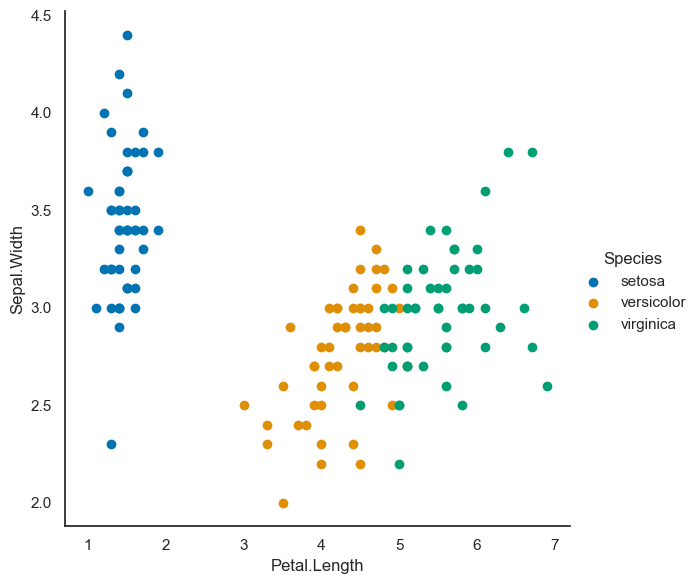

import warnings
warnings.filterwarnings('ignore')
import pandas as pd
import matplotlib.pyplot as plt
%matplotlib inline
import seaborn as sns
sns.set(style="white",palette="colorblind")Chargement des données et import des packages :
from sklearn import datasets
iris=pd.read_csv("IRIS.csv")
iris.head()| ID | Sepal.Length | Sepal.Width | Petal.Length | Petal.Width | Species | |
|---|---|---|---|---|---|---|
| 0 | 1 | 5.1 | 3.5 | 1.4 | 0.2 | setosa |
| 1 | 2 | 4.9 | 3.0 | 1.4 | 0.2 | setosa |
| 2 | 3 | 4.7 | 3.2 | 1.3 | 0.2 | setosa |
| 3 | 4 | 4.6 | 3.1 | 1.5 | 0.2 | setosa |
| 4 | 5 | 5.0 | 3.6 | 1.4 | 0.2 | setosa |
On veut savoir maintenant combien il y a de données dans mon fichier csv
iris["Species"].value_counts()setosa 50
versicolor 50
virginica 50
Name: Species, dtype: int64On a envie de voir à quoi ressemble les données, comment elles sont organisées
sns.FacetGrid(iris, hue="Species", height=6).map(plt.scatter, "Petal.Length", "Sepal.Width").add_legend()
On voit un graph qui affiche les données en ordonnée on a la largeur des sepal et en abscisse longueur des pétales les données ont l’air d’être bien rangées et il semble qu’on peut séparer les 3 catégories assez distinctement
Régression logistique
flower_mapping={'setosa':0,'versicolor':1,'virginica':2}
iris["Species"]=iris["Species"].map(flower_mapping)iris.head()| ID | Sepal.Length | Sepal.Width | Petal.Length | Petal.Width | Species | |
|---|---|---|---|---|---|---|
| 0 | 1 | 5.1 | 3.5 | 1.4 | 0.2 | 0 |
| 1 | 2 | 4.9 | 3.0 | 1.4 | 0.2 | 0 |
| 2 | 3 | 4.7 | 3.2 | 1.3 | 0.2 | 0 |
| 3 | 4 | 4.6 | 3.1 | 1.5 | 0.2 | 0 |
| 4 | 5 | 5.0 | 3.6 | 1.4 | 0.2 | 0 |
On a associé ici pour chaque fleur un numéro pour la catégoriser comme setosa versicolor ou virginica. (étape de la cartographie)
Preparation entrée et sortie
X=iris[['Sepal.Length','Sepal.Width','Petal.Length','Petal.Width']].values
y=iris[['Species']].values from sklearn.linear_model import LogisticRegression model = LogisticRegression()model.fit(X,y)LogisticRegression()Précision
model.score(X,y)0.9733333333333334Cela veut dire que nous avons une précision de environ 97%, bien que ça ne soit pas la bonne façon de mesurer la précision du modèle
Prédiction
attendu = y
prediction = model.predict(X)
predictionarray([0, 0, 0, 0, 0, 0, 0, 0, 0, 0, 0, 0, 0, 0, 0, 0, 0, 0, 0, 0, 0, 0,
0, 0, 0, 0, 0, 0, 0, 0, 0, 0, 0, 0, 0, 0, 0, 0, 0, 0, 0, 0, 0, 0,
0, 0, 0, 0, 0, 0, 1, 1, 1, 1, 1, 1, 1, 1, 1, 1, 1, 1, 1, 1, 1, 1,
1, 1, 1, 1, 2, 1, 1, 1, 1, 1, 1, 2, 1, 1, 1, 1, 1, 2, 1, 1, 1, 1,
1, 1, 1, 1, 1, 1, 1, 1, 1, 1, 1, 1, 2, 2, 2, 2, 2, 2, 1, 2, 2, 2,
2, 2, 2, 2, 2, 2, 2, 2, 2, 2, 2, 2, 2, 2, 2, 2, 2, 2, 2, 2, 2, 2,
2, 2, 2, 2, 2, 2, 2, 2, 2, 2, 2, 2, 2, 2, 2, 2, 2, 2], dtype=int64)On voit pas très bien à quoi cette matrice correspond…
Résumer l’ajustement du modèle
from sklearn import metricsprint(metrics.classification_report(attendu,prediction)) precision recall f1-score support
0 1.00 1.00 1.00 50
1 0.98 0.94 0.96 50
2 0.94 0.98 0.96 50
accuracy 0.97 150
macro avg 0.97 0.97 0.97 150
weighted avg 0.97 0.97 0.97 150
le f1-score est un bien meilleur indicateur de prédiction du modèle print(metrics.confusion_matrix(attendu,prediction))[[50 0 0]
[ 0 47 3]
[ 0 1 49]]Cette matrice nous indique qu’il y a 50 bonnes prédictions pour la première espèce de fleur, pour la seconde espèce 47 sont bonnes et 3 mauvaises et pour la 3ème espèce 49 bonnes et une mauvaise